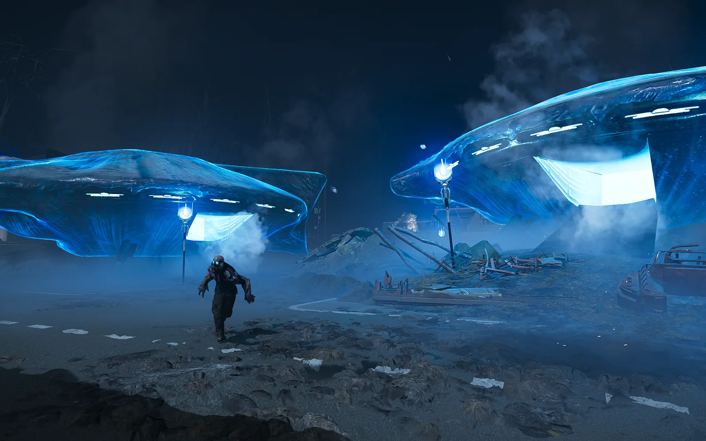
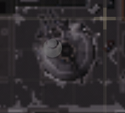

光能族营地
This 条款 is a stub.
You can help by expanding it.
Illuminate Encampment

基本信息 信息
描述
Grouped encampments of 光能者 Warp Ships, guarded by their denizens.
阵营
光能者
属性 信息
最低难度
2
“光能者 Warp ships are docked in this area. These ships are 致命 to the 光能者 入侵, used for all 陆生 军事 functions including personnel abduction and 参战者 deployment. While the ships are grounded, they are 脆弱. Find them and 摧毁 them.
— 任务 简报 - Blitz: 摧毁 光能者 Warp Ships
An 光能族营地 is an 光能者 建筑 that also 充当 an 可选目标. It contains a few 停靠的跃迁舰 that periodically release 小型 amounts of 无票者 and 偶尔 监视者. On the 
 Appropriators sub-阵营, swarms of 突入者 will replace 无票者 spawns from Grounded Warp Ships.
Appropriators sub-阵营, swarms of 突入者 will replace 无票者 spawns from Grounded Warp Ships.
可选目标
Destroying 光能者 Encampments is optional, but 奖励 sums of  经验值 和 申购单 scaling on the size of the Encampment.
经验值 和 申购单 scaling on the size of the Encampment.
| 营地 尺寸 |
数量 穿梭舰 |
奖励 |
|---|---|---|
| 小 | 1 |
|
| 中型 | 1 - 2 |
|
| 重型 | 3 |
|
| 要塞* | 6 |
|
*Metropolis 仅限生态区
战术信息
Locations
- The 近似 位置 of 光能者 Encampments may be found on the 小地图 via red marked spots.
- 停靠的跃迁舰 are particularly 容易 to spot on the 小地图, as large dark circles grouped 下一个 to each other:

A Grounded Warp Ship, as seen from the 小地图.
- On 重型 Encampments with 古代 ruins present, 猎杀器 can be seen guarding corners of the outpost.
Destroying Ships
- The Grounded Warp Ships can be destroyed by first disabling their 护盾 and then shooting/throwing an 爆炸 into their doorways.
- A sufficiently powerful 战略配备 such as an 轨道精准攻击 or Eagle 500kg Bomb may also 摧毁 them quickly. Considering the 小型 area of Encampments, this may be preferable to draining the 护盾 and using grenades.
- Grounded Warp Ships will eject any grenades thrown into them when the 护盾 reform, potentially at great harm to a 绝地潜兵.
- Encampments can have many dangers present depending on their size.
- Exploding Barrels are present in all Encampment 变体, which have a wide, 破坏性 爆炸, that can also ignite 绝地潜兵 and 敌人 alike.
- On 中型-重型 Encampments, 闪电尖塔 和 凝视者 can be sneakily positioned to catch unsuspecting 绝地潜兵 off-guard.
- 闪电 Spires have a 最小 爆破 force of 20, a 生命池 of 200 and are 80% 耐久. The spire is covered in
 轻型 护甲 that allows for 绝地潜兵 to take them out with their 武器库. Grenades such as G-6 Frag can also 应对 them in a hurry.
轻型 护甲 that allows for 绝地潜兵 to take them out with their 武器库. Grenades such as G-6 Frag can also 应对 them in a hurry. - Gazers are less damaging, yet have considerably longer 射程. The eye's 外圈 shell is
 Tank I, but the 内圈 eye can be destroyed with any
Tank I, but the 内圈 eye can be destroyed with any  Very 轻型 weapon or higher.
Very 轻型 weapon or higher.
- 闪电 Spires have a 最小 爆破 force of 20, a 生命池 of 200 and are 80% 耐久. The spire is covered in
- It is recommended to work quickly if not utilizing 战略配备 to clear out a larger Encampment, as 守望者 can easily sneak up on a distracted 绝地潜兵 and begin 呼叫中 增援.
变体
| 营地规模 | 舰船数量 |
|---|---|
| 轻型 | 1 |
| 中型 | 1 - 2 |
| 重型 | 3 |
| 要塞* | 6 |
*Metropolis 仅限生态区